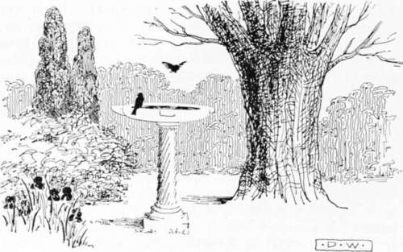
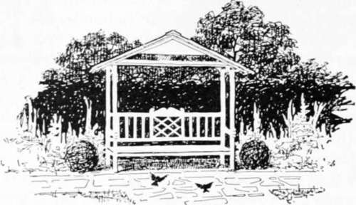

Embellishments. Part 4
Description
This section is from the book "Landscape Gardening", by Andrew Jackson Downing. Also available from Amazon: Landscape Gardening.
Embellishments. Part 4
To illustrate the mode of arranging the beds and disposing the plants in an English garden, we copy the description of the elegant flower-garden, on the lawn at Dropmore, the beds being cut out of the smooth turf.
"As a general principle for regulating the plants in this figure, the winter and spring flowers ought, as much as possible, to be of sorts which admit of being in the ground all the year: and the summer crop should be planted at intervals between the winter plants. Or the summer crop, having been brought forward in pots under glass, or by nightly protection, may be planted out about the middle of June, after the winter plants in pots are removed. A number of hardy bulbs ought to be potted and plunged in the beds in the months of October and November; and when out of bloom, in May or June, removed to the reserve garden and plunged there, in order to perfect their foliage and mature their bulbs for the succeeding season." There cannot be a question that this method of planting the flower-garden in groups and masses, is productive of by far the most splendid effect. In England, where flower-gardens are carried to their greatest perfection, the preference in planting is given to exotics which blossom constantly throughout the season, and which are kept in the greenhouse during winter, and turned out in the beds in the early part of the season, where they flower in the greatest profusion until frost; as fuchsias, salvias, lobelias, scarlet geraniums, etc., etc.* This mode can be adopted here where a small green-house or frame is kept. In the absence of these, nearly the same effect may be produced by choosing the most showy herbaceous plants, perennial and biennial, alternating them with hardy bulbs, and the finer species of annuals.
Fig. 25. A Bird Bath as a Garden Ornament.
Where the proprietor of a country residence, or the ladies of a family, have a particular taste, it may be indulged at pleasure in other and different varieties of the flower-garden. With some families there is a taste for botany, when a small botanic flower-garden may be preferred — the herbaceous and other plants being grouped or massed in beds after the Linnaean, or the natural method. Some persons have an enthusiastic fondness for florist flowers, as pansies, carnations, dahlias, roses, etc.; others for bulbous plants, all of which may very properly lead to particular modes of laying out flower-gardens.
* In many English residences, the flower-garden is maintained in never-fading brilliancy by almost daily supplies from what is termed the reserve garden. This is a small garden out of sight, in which a great number of duplicates of the species in the flower-garden are grown in pots plunged in beds. As soon as a vacuum is made in the flower-garden by the fading of any flowers, the same are immediately removed and their places supplied by fresh plants just ready to bloom, from the pots in the reserve garden. This, which is the ultimatum of refinement in flower-gardening, has never, to our knowledge, been attempted in this country. — A. J. D. This use of the reserve garden is probably as common in America today as in England. — F. A. W.
Fig. 26. Garden Seat.
The desideratum, however, with most persons is, to have a continued display of blossoms in the flower-garden from the opening of the crocus and snowdrop in the spring, until the autumnal frosts cut off the last pale asters, or blacken the stems of the luxuriant dahlias in November. This may be done with a very small catalogue of plants if they are properly selected: such as flower at different seasons, continue long time in bloom, and present fine masses of flowers. On the other hand, a very large number of species may be assembled together; and owing to their being merely botanical rarities, and not bearing fine flowers, or to their blossoming chiefly in a certain portion of the season, or continuing but a short period in bloom, the flower-garden will often have but an insignificant appearance. With a group of pansies and spring bulbs, a bed of ever-blooming China roses, some few eschscholtzias, the showy petunias, gilias, and other annuals, and a dozen chorce double dahlias, and some trailing verbenas, a limited spot, of a few yards in diameter, may be made productive of more enjoyment, so far as regards a continued display of flowers, than ten times that space, planted, as we often see flower-gardens here, with a heterogeneous mixture of everything the possessor can lay his hands on, or crowd within the inclosure.
The mingled flower-garden, as it is termed, is by far the most common mode of arrangement in this country, though it is seldom well effected. The object in this is to dispose the plants in the beds in such a manner, that while there is no predominance of bloom in any one portion of the beds there shall be a general admixture of colors and blossoms throughout the entire garden during the whole season of growth.
To promote this, the more showy plants should be often repeated in different parts of the garden, or even the same parterre when large, the less beautiful sorts being suffered to occupy but moderate space. The smallest plants should be nearest the walk, those a little taller behind them, and the largest should be furthest from the eye, at the back of the border, when the latter is seen from one side only, or in the centre, if the bed be viewed from both sides. A neglect of this simple rule will not only give the beds, when the plants are full grown, a confused look, but the beauty of the humbler and more delicate plants will be lost amid the tall thick branches of sturdier plants, or removed so far from the spectator in the walks, as to be overlooked.
Considerable experience is necessary to arrange even a moderate number of plants in accordance with these rules. To perform it successfully, some knowledge of the habits of the plants is an important requisite; their height, time of flowering, and the colors of their blossoms. When a gardener, or an amateur, is perfectly informed on these points, he can take a given number of plants of different species, make a plan of the bed or all the beds of a flower garden upon paper, and designate the particular situation of each species.
Continue to: